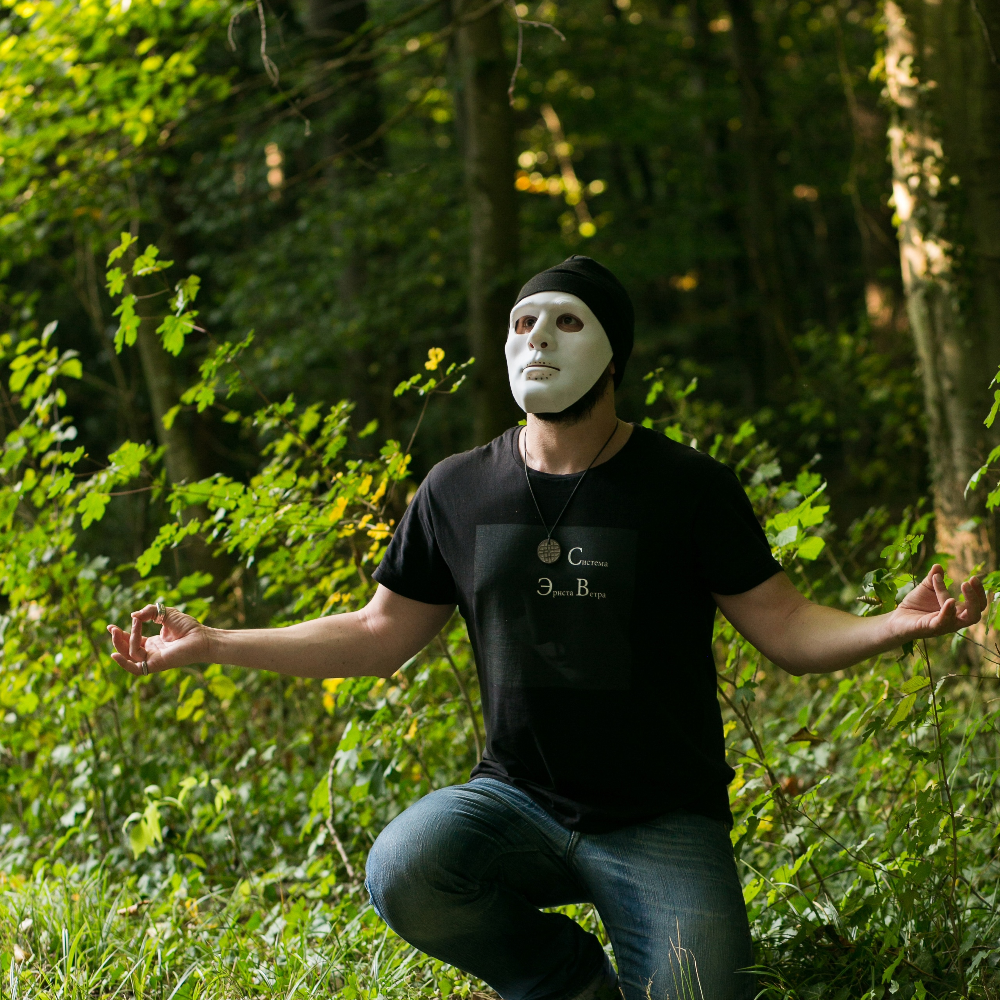
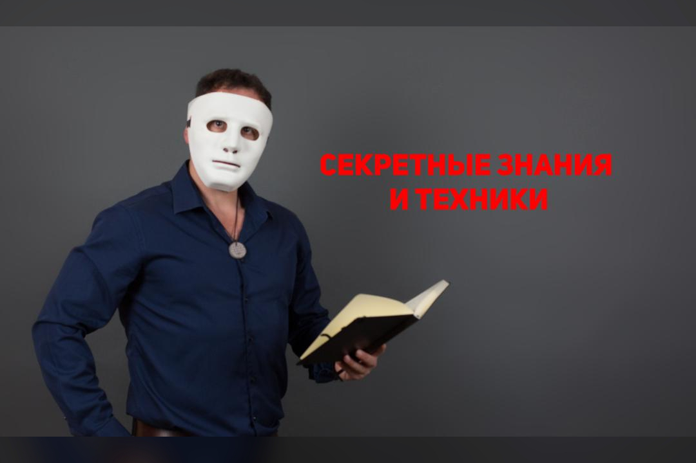

Пожалуйста, посмотрите все видео в этом плейлисте, прежде чем продолжить (Для получения важной информации)
Привет, добро пожаловать в мой мир.

Меня зовут Эрнст Ветер. Я практик и эксперт по сверхспособностям
Я родился в 1974 году, в возрасте 26 лет я встретил своего учителя, который открыл мне глаза на те вещи, которые скрыты от других. Он научил меня работать с энергетической материей, научил меня преобразовывать и умножать ее. Я узнал, что такое сиддхи, проще говоря, сверхспособности. Год спустя я смело перемещал предметы одним взглядом. После этого я начал открывать одну за другой сверхспособности, такие как левитация, пирокинез, телепортация, путешествия во времени, телепатия, контроль событий в моей жизни. Теперь я могу с уверенностью сказать: “Я знаю достаточно, чтобы учить других, и я все еще знаю слишком мало, чтобы перестать учить себя” Я создал свою онлайн-школу под названием Ernst Veter System в 2016 году, и с тех пор это лучшая школа для обучения сверхъестественным способностям, доступная для общественности. Когда-то это знание было секретным, но теперь оно стало доступно определенному кругу людей. Кто входит в этот круг и что нужно для вхождения в него? Вам понадобятся: сила воли, настойчивость, умение слушать и слышать, желание свернуть горы на своем пути и дикая жажда тайных знаний.
Привет! Я Даниэль Грегорев, соучредитель системы Эрнста Ветра.
Моя жизненная цель - накапливать энергию и находить в ней смысл. Я также буду вашим гидом в знакомстве со сверхъестественным миром. Мы начнем с основ - всего необходимого и основополагающего, чтобы подготовить себя к таким мощным сиддхам, как телекинез, пирокинез и левитация. Начнем с экстрасенсорного восприятия. Основы гармоничного питания. Базовые упражнения для определения мозговой активности и частоты. Введение в тему чакр. Анализ возможных сдвигов поля и основы видения поля. Работа с визуализацией, работа с мыслью. Ритмы мозга, изменение ритмов мозга, медитация и транс. Создание реальности и работа с предметным полем с использованием трех специализированных подходов. Прежде чем мы начнем занятия, я проведу с вами личное собеседование, чтобы узнать о вас больше и поприветствовать вас в школе. Ну что, ты с нами?

Стартовая Программа
70 долларов в месяц Новинка!
$799
Вот подробности нашей программы для начинающих. Это начальная программа экстрасенсорного восприятия, она рассчитана на 2 месяца. Стоимость обучения, обучения и учебных материалов составляет 70 долларов США в месяц. После завершения всех 12 лекций и сдачи итогового экзамена есть специальная возможность перейти на год обучения в льготных группах. Эти льготные группы являются второстепенными программами, которые включают телекинез, пирокинез и левитацию. Они предлагаются со скидкой по сравнению с полноценными курсами и действуют по той же ежемесячной модели, что и начальная программа. Эта программа включает в себя всю базу по силе разума, визуализации, медитации, телепатии и контролю основных экстрасенсорных способностей.
Обучаясь по этой системе, вы обязательно улучшите качество своей жизни, поймете весь комплекс работы с чакрами, визуализацией, концентрацией, и при должном усердии сможете продемонстрировать необходимые навыки. Со своей стороны, мы приложим все усилия, чтобы передать вам все теоретические и практические знания.
Все уроки будут на английском языке, будут проводиться видеолекции, а также время от времени будут проводиться встречи с zoom в прямом эфире.
Нажав на кнопку ниже, вы попадете в чат, где сможете представиться Даниэлю.
После его одобрения вам будет предоставлен доступ к занятиям.
Специальное предложение: включите этот промо-код: «FORB23» в свое сообщение Даниэлю.
Удачи!
Без оплаты система вряд ли бы работала. Требуется время, чтобы наставлять студентов, которые нуждаются в пристальном наблюдении в их путешествии, поэтому это работа на полный рабочий день. Студенты также явно не оценили бы это в полной мере, если бы это было бесплатно. Так что это мотивирующий фактор для студентов, которые действительно хотят этого добиться. Также, оплачивая занятия, вы помогаете нашим учителям меньше тратить время на регулярную работу, а это значит, что они могут больше отдать времени своим личным тренировкам и улучшению курсов и методов преподавания. Это напрямую улучшает школу, а значит и ваше собственное обучение в ней и результативность.
Ученым необходимо изменить свою риторику, когда они сталкиваются с эзотерикой. Сверхспособности - это священное и ценное искусство, которое ведет человека через удивительное путешествие. Когда над этим человеком смеются перед камерами и аудиторией, это смущает. Ученые и скептики должны иметь реальное желание понять нас, а не высмеивать.
В этой практике нет абсолютно никакого зла. Все это происходит от красоты в связи с абсолютом, или божественным источником.
Все зависит от вашей настойчивости и желания, а также от вашего оригинального таланта. Есть студенты, которые достигают результатов в течение 5−6 месяцев, а есть те, кто пытается достичь их в течение гораздо более длительного времени. Результаты студентов, по согласованию с ними, мы публикуем на канале YouTube, в Telegram и Instagram.